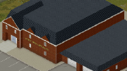

cara bermain project zomboid untuk pemula
Langkah:
- pilih peta Rosewood
- pilih traits/pekerjaan Lumberjack
- Setelah itu jika sudah spawn dan cari Damkar
- Setelah itu cari kapak dan cari ruangan yang luas untuk dijadikan rumah
- Jika sudah ketemu pergi ke police dan cari ruangan yang berpintu hitam
- Lalu hancurkan pintu hitam itu dengan kapak
Penjelasan langkah
- Rosewood adalah peta yang lebih sedikit zombienya sedikit dan fasilitas lengkap ada Damkar,Police,sekolah
- Lumberjack adalah traits/pekerjaan yang sangat bagus untuk pemula karena jika kalian menebang pohon akan lebih cepat menebangnya
- jika kalian tidak menemukan kapak didamkar kalian masih bisa mengcrafting kapak batu caranya dengan mencari batu dan ranting kayu
- Kalian bisa menghancurkan pintu dengan kapak atau sejenisnya jika masih belum punya kapak cari zombie berbaju polisi dan cari kuncinya agar bisa memebuka pintu hitam
berikut gambar Damkar

berikut gambar sekolah